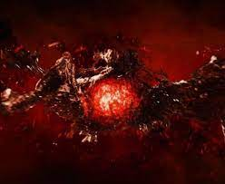

JOIA DA REALIDADE:

joia da realidade possuía a forma de uma substância viscosa vermelha e escura chamada Éter. O Éter havia pertencido aos Elfos Negros que queria usa-lo para espalhar as sombras por todos os Nove Reinos, mas foram detidos pelo pai de Odin, que pegou o Éter no fim da guerra e o deixou abandonado em uma caverna.
Anos após isso, Jane Foster acidentalmente foi teleportada para essa caverna, onde encontrou o Éter e ao se aproximar, a substância logo encontrou em contato com a moça, penetrando em seu corpo. Após Thor a reencontrar e ver que o Éter havia a deixado perigosa e fraca, ele a levou para Asgard para examina-la. Após Malekith tirar o Éter do corpo de Jane, Thor tentou destruí-lo, mas só conseguiu fragmenta-lo, que rapidamente se reconstituiu.
Quando Malekith absorveu o Éter, ele foi para a Terra para começar o seu plano, onde lutou contra Thor, que conseguiu vence-lo e conter o Éter. Quando os asgardianos tinham total tutela sobre o Éter, eles o levaram para Lugar Nenhum para entrega-lo ao Colecionador.
A joia da realidade é possivelmente a joia do infinito mais poderosa e perigosa, já que seus poderes concedem ao portador a capacidade de manipulação da realidade. Com domínio dessa joia, o portador pode manipular a realidade para realizar qualquer vontade, quebrando as leis da física e da natureza. A joia permite criar, destruir e alterar qualquer coisa ao seu redor, seja matéria, energia ou seres vivos.